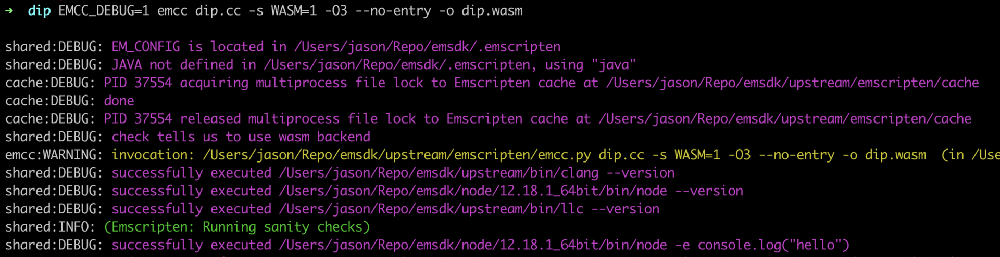
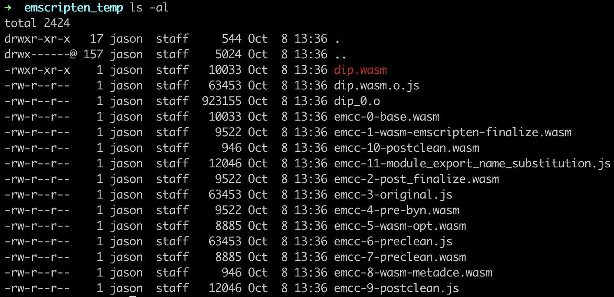
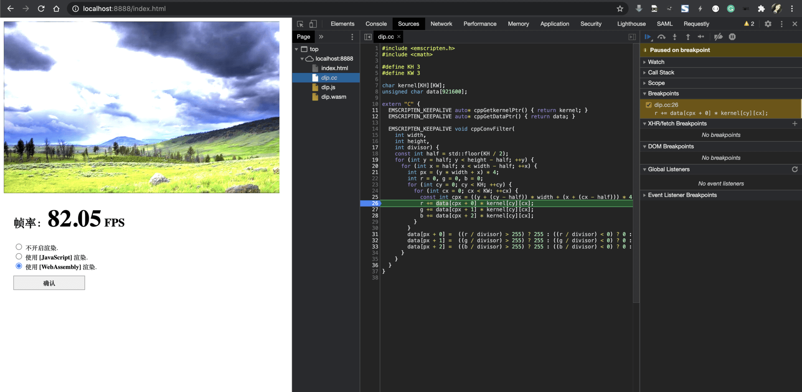
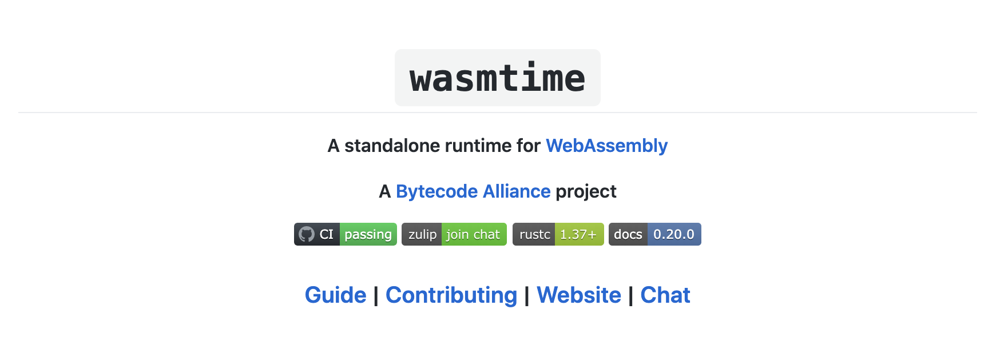
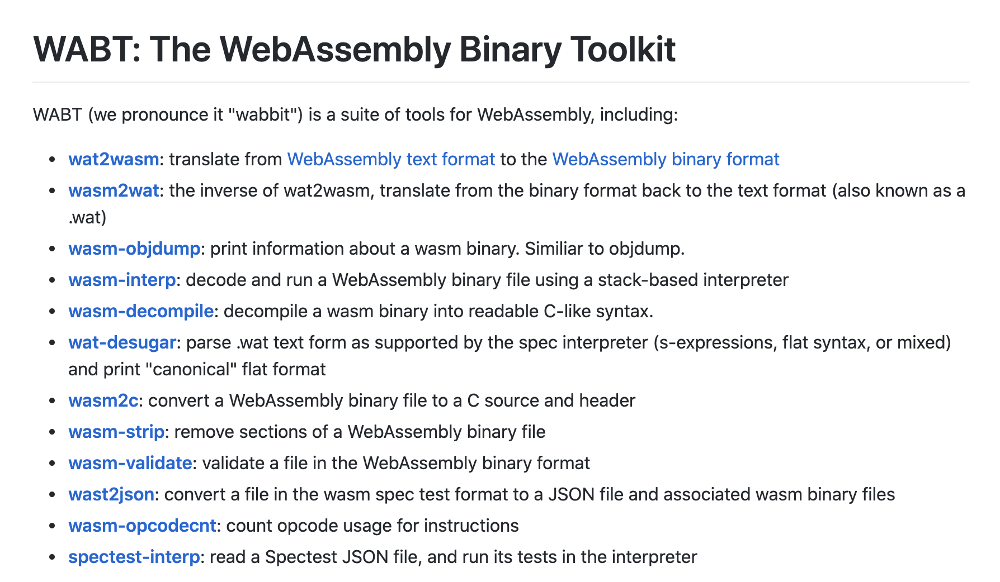
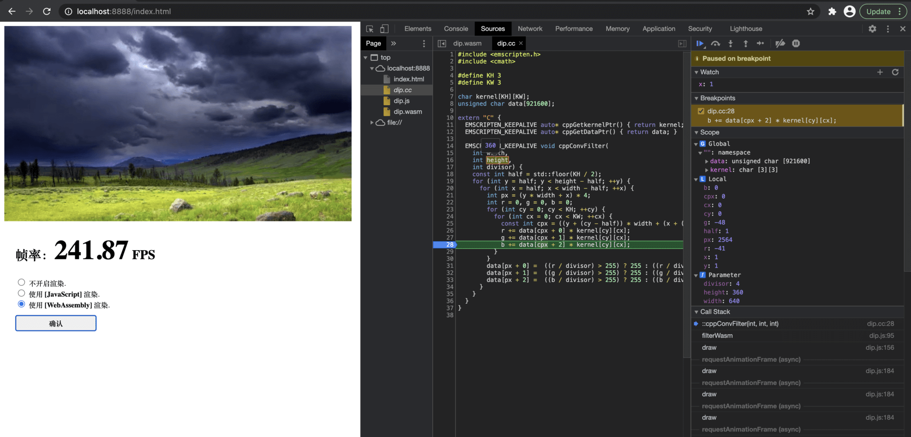

- 00 开篇词 我们为什么要了解 WebAssembly？.md.html
- 01 基础篇：学习此课程你需要了解哪些基础知识？.md.html
- 02 历史篇：为什么会有 WebAssembly 这样一门技术？.md.html
- 03 WebAssembly 是一门新的编程语言吗？.md.html
- 04 WebAssembly 模块的基本组成结构到底有多简单？.md.html
- 05 二进制编码：WebAssembly 微观世界的基本数据规则是什么？.md.html
- 06 WAT：如何让一个 WebAssembly 二进制模块的内容易于解读？.md.html
- 07 WASI：你听说过 WebAssembly 操作系统接口吗？.md.html
- 08 API：在 WebAssembly MVP 标准下你能做到哪些事？.md.html
- 09 WebAssembly 能够为 Web 前端框架赋能吗？.md.html
- 10 有哪些已经投入生产的 WebAssembly 真实案例？.md.html
- 11 WebAssembly 在物联网、多媒体与云技术方面有哪些创新实践？.md.html
- 12 有哪些优秀的 WebAssembly 编译器与运行时？.md.html
- 13 LLVM：如何将自定义的语言编译到 WebAssembly？.md.html
- 14 有哪些正在行进中的 WebAssembly Post-MVP 提案？.md.html
- 15 如何实现一个 WebAssembly 在线多媒体处理应用（一）？.md.html
- 16 如何实现一个 WebAssembly 在线多媒体处理应用（二）？.md.html
- 17 如何实现一个 WebAssembly 在线多媒体处理应用（三）？.md.html
- 18 如何进行 Wasm 应用的调试与分析？.md.html
- 19 如何应用 WASI 及其相关生态？.md.html
- 20 总结与答疑.md.html
- 结束语 WebAssembly，未来已来.md.html
- 捐赠
18 如何进行 Wasm 应用的调试与分析？
你好，我是于航。
所有正在应用 Wasm 这门技术的开发者，都会被频繁问到这样一个问题 —— “如何能够以最正确的方式来对一个 Wasm 模块（应用）进行调试？”
实际上，针对 Wasm 模块的调试方案与相应的工具链，暂时还没有统一的“事实标准”。而又由于 Wasm 本身可以被应用在诸如 Web 与 out-of-web 等多种场景中，这便使得对 Wasm 模块或应用的调试过程，变得十分复杂。
在本节课里我将为你总结现阶段所能够使用的一些，针对于独立 Wasm 模块或者说 Wasm 应用的调试方案。这些方案本身并没有优劣之分，你可以根据自己的实际情况和应用场景来挑选合适的 Wasm 调试方式。
这些方案将会基于不同的工具实现来展开，而关于工具本身的安装过程，你可以参考我在这节课里给出的相关链接。
总的来说，我们可以将这些方案划分为 Web 与 out-of-web 两种场景。前者对应于运行在 Web 浏览器中的 Wasm 应用，这些应用仅使用到了 Wasm 核心标准中的特性；而后者则对应于运行在如 Wasmtime 等 Wasm 运行时中的 Wasm 应用，这部分应用还将会使用到除 Wasm 核心标准之外的 WASI 抽象操作系统接口标准。
编译时调试
作为开发 Wasm 应用的一个必不可少的流程，“编译”是一个无论如何也要跨过去的“槛”。但总是有着各种各样的原因，导致你的应用在编译阶段会出现问题。所以我们先来看看如何调试应用在编译期发生的错误。
Emscripten
Emscripten 作为构建可运行于 Web 浏览器上的 Wasm 应用的首选编译工具之一，它为我们提供了众多的调试选项，可以在编译过程中输出详细的调试信息以供排错之用。
EMCC_DEBUG
以我们上节课从零构建的 Wasm DIP 应用为例，在实际使用 emcc（Emscripten 提供的编译器）编译该项目时，我们可以通过为编译命令添加 “EMCC_DEBUG” 环境变量的方式，来让 emcc 以“调试模式”的方式来编译我们的项目，修改后的编译命令如下所示。
注：此命令行形式仅适用于 Linux / MacOS 系统，对于 Windows 则会有所区别。你可以参考 Emscripten 官方文档来查看相关细节。
EMCC_DEBUG=1 emcc dip.cc
-s WASM=1
-O3
--no-entry
-o dip.wasm
这里命令行中设置的环境变量 “EMCC_DEBUG” 支持三个值：0、1 与 2。其中 “0” 表示关闭调试模式，也就是默认不加该环境变量时的情况；“1” 表示输出编译时的调试性信息，同时生成包含有编译器各个阶段运行信息的中间文件。这些输出信息和文件可用于对整个 emcc 编译流程的各个步骤进行调试。以下为 emcc 的编译输出信息及所生成中间文件的截图。

在编译时输出的调试性信息中，包含有 emcc 在实际编译源代码时其各个编译阶段所实际调用的命令行信息（命令+参数）。比如在编译阶段调用的 clang++、链接阶段调用的 wasm-ld，甚至在优化阶段还会调用的 node 等等。
通过这些输出的详细命令行参数，你就能够知道 emcc 在对源代码的实际编译过程中，使用了哪些编译器参数，以及哪些缺少或错误添加的参数会影响源代码的编译流程。通过这种方式，能够在一定程度上辅助你找到项目编译失败的“根源”。

而当为 “EMCC_DEBUG” 设置的值为 “2” 时，emcc 会生成更多的包含有中间调试性信息的文件，在这些文件中将包含有与 JavaScript 优化器相关的编译时信息。
-s [DEBUGGER_FLAG=VALUE]
除了我们上述介绍的 “EMCC_DEBUG” 之外，emcc 还有很多针对特定场景的编译器调试选项可以使用。而这些选项都需要以 “emcc -s [DEBUGGER_FLAG=VALUE]” 的方式，来将其应用到编译命令行中。
比如 “ASSERTIONS” 选项。该选项可用于启用 emcc 对常见内存分配错误的运行时断言检查。其值可以被设置为 “0”，“1” 或 “2”。其中，“0” 表示禁用该选项，另外的 “1” 和 “2” 随着数字的逐渐增大，表示所启用相关测试集的增多。
类似的，还有其他如 “SAFE_HEAP” 等编译器调试选项可以使用。而关于这些可以在 emcc 中使用的调试器选项信息，你可以参考这里进行了解。
运行时调试
相较于“编译时调试”，“运行时调试”意味着我们已经成功地编译了 Wasm 应用，但是却在实际运行时发生了错误。那本节我们来看看，如何调试那些在运行时发生异常的 Wasm 应用。
Emscripten
为了能够调试运行在 Web 浏览器中的 Wasm 应用，我们需要在通过 Emscripten 编译应用时，为编译命令指定特殊的“调试参数”，以保留这些与调试相关的信息。而这个参数就是 “-g”。
“-g” 参数控制了 emcc 的编译调试等级，每一个调试等级都会保留更多的相应调试性信息。整个等级体系被分为 0-4 五个级别。在其中 “-g4” 级别会保留最多的调试性信息。
不仅如此，在 “-g4” 这个级别下，emcc 还会为我们生成可用于在 Web 浏览器中进行“源码级”调试的特殊 DWARF 信息。通过这些特殊格式的信息，我们便可以直接在 Web 浏览器中对 Wasm 模块编译之前的源代码进行诸如“设置断点”、“单步跟踪”等调试手段。如下所示，假设此时我们使用该参数重新编译上一节课中的 DIP Web 应用。
emcc dip.cc
-g4
-s WASM=1
-O3
--no-entry
-o dip.wasm
可以看到，这里在命令行中，我们使用了参数 “-g4”。编译完成后，我们便可以使用浏览器来加载这个 Web 应用。在此同时并打开“开发者面板”，来尝试直接通过“操作” C/C++ 源代码的方式，来为应用所使用的 Wasm 模块设置断点。具体你可以参考下面这张图（这里我们使用的是 Chrome 浏览器）。

通过这种方式，我们可以方便地在 Wasm Web 应用的实际运行过程中，来调试那些发生在 Wasm 模块内部（C/C++）的“源码级”错误。
但目前这项调试功能还不是十分完善。我们仅能够在 Web 浏览器中为 C/C++ 等源代码设置断点、进行单步跟踪调试，或者是查看当前的调用栈信息。而比如“查看源代码中的变量值和类型信息”、“跟踪观察变量或表达式的值变化”等更加实用的功能，暂时还无法使用。
对于使用 Rust 语言编写的 Wasm 模块来说，我们可以通过类似地为 rustc 添加 “-g” 参数的方式，来让编译器将 DWARF 调试信息加入到生成的 Wasm 模块中。而对于直接使用 cargo 编译的 Wasm 项目来说，调试信息将会自动被默认加入到生成的模块中。
Wasmtime
对于 out-of-web 领域中的 Wasm 应用，根据第 07 讲中的介绍，我们知道借助于 WASI，这些应用可以在保证良好可移植性的情况下，进一步与各类操作系统资源打交道。而为了能够在 Web 浏览器之外的环境中执行 Wasm 模块中的字节码，则需要诸如 Wasmtime、Lucet 等各类 Wasm 运行时的支持。
对比于在 Native 环境中直接编译而成的可执行文件来说，这些基于 WASI 构建的 Wasm 模块可以具有与这些原生可执行程序同等的能力，前提是只要 WASI 标准中支持相应的操作系统调用抽象接口即可。
能力虽然可以相同，但两者的运行时环境却完全不同。对于原生可执行程序来说，它们的实际执行过程会交由操作系统来统一负责。而对于 Wasm 模块来说，无论是运行在 Web 平台之上，还是应用于 out-of-web 领域中的 Wasm 字节码，它们都需要通过 Wasm 运行时（引擎）来提供字节码的实际执行能力。这也就造成了两者在调试过程和方法上的区别。
为了能够尽量使两者的调试方式保持一致，Wasmtime（一个 Wasm 运行时）便为我们提供了这样的一种能力，让我们可以使用诸如 LLDB 与 GDB 等专用于原生可执行程序的调试工具，来直接调试 Wasm 的二进制模块文件。不过需要注意的是，为了能够确保这个特性具有最大的可用性，我们需要使用最新版的 LLDB、GDB 以及 Wasmtime。
在此基础之上，我们便可以仅通过如下这行命令，来在 LLDB 中调试我们的 Wasm 字节码（假设这里我们要调试的 Wasm 模块文件名为 “app.wasm”）。
lldb -- wasmtime -g app.wasm
当然，现实的情况是，如果想要使用这种针对 Wasm 字节码的 out-of-web 调试方式，你需要重新编译整个 LLDB 或 GDB 调试工具链，并确保本机的 Wasmtime 已经被更新到最近的版本。其中，前者要花费不少的精力，而后者还没有发布正式的版本。因此这种调试方式所能够支持的调试功能仍有着一定的限制。更多的信息你可以参考这里的链接。

其他调试工具
对于其他的 Wasm 相关调试工具，这里主要推荐你使用 “WABT” 。关于这个工具集，我在文章 06 中曾提到过。WABT 内置了众多可以直接对 Wasm 字节码或者 WAT 可读文本代码进行转换和分析的工具。比如用于将 WAT 格式转换为 Wasm 字节码的工具 “wat2wasm”、用于将 WAT 转换为 Flat-WAT 的工具 “wat-desugar” 等等。
除此之外，还有一些可以针对 Wasm 字节码进行“反编译”的工具，比如 “wasm-decompile” 工具可以将 Wasm 字节码反向转换为“类 C 语法格式” 的可读代码。其可读性相较于 WAT 来说可以说是又更近了一步。

总结
好了，讲到这，今天的内容也就基本结束了。最后我来给你总结一下。
在今天这节课中，我们主要讲解了有关 Wasm 应用调试的一些现阶段可用的方案。Wasm 应用的构建和使用主要被分为“编译”与“运行”两个阶段，而相应的调试方案便也需要针对这两个阶段分别进行处理。
对于“编译”阶段，我们主要介绍了在通过 Emscripten 构建 Wasm 应用时，可以在编译命令行中使用的一些调试参数。其中，“EMCC_DEBUG” 参数可以让 emcc 在编译过程中输出更多的信息以用于支持应用的编译时调试。相应地，通过 “-s” 参数，我们也可以为 emcc 指定一些针对某些特定场景的调试参数，这些参数可以让 emcc 在编译过程中检查某些特定问题。
对于“运行”阶段，我们首先介绍了如何通过为 Emscripten 的编译命令添加 “-g” 参数，来让我们可以直接在 Web 浏览器中针对 Wasm 模块的编译前源代码进行调试。但就目前而言，我们能够在 Web 浏览器中获得的调试性信息，还不足以让我们可以直接高效地在浏览器中解决相应的运行时问题。
最后，我们还介绍了如何在 out-of-web 环境中调试 Wasm 字节码。这里我们依赖于 Wasmtime 所提供的支持，使得我们可以直接在诸如 LLDB、GDB 等传统调试器中调试 Wasm 字节码对应的编译前源代码。但一个重要的前提是，你需要事先安装这些调试器与 Wasmtime 的最新版本，这在某种程度上来说，可能对你也是一种负担。
总的来说，就现阶段的 Wasm 应用调试而言，无论是在 Web 平台上，还是 out-of-web 环境中，都没有一个成熟、稳定、可靠的“一站式”调试解决方案。但好在 Wasm CG 旗下的 “WebAssembly Debugging Subgroup” 正在努力解决这个问题。相信在不久的将来，针对 Wasm 应用的调试不会再成为一个令开发者“望而生畏”的难题。
更新（2020-12-11）：
在今年的 Chrome 2020 开发者峰会上，Chrome 团队推出了一款新的 Chrome 扩展，可以帮助我们增强浏览器上的 Wasm 应用调试体验。相较于之前在浏览器中直接调试 Wasm 模块对应 C/C++ 源代码的体验，在这款扩展的帮助下，我们还可以做到诸如：查看原始 C/C++ 源代码中变量的值、对 C/C++ 源代码进行单步跟踪，甚至直接跟踪观察某个变量值的变化等等。下图所示为在借助这款插件后，对同一个项目的调试体验差异。

关于这款插件的具体使用方式和更多信息，你可以点击“这里”进行查看。
课后思考
最后，我们来做一个思考题吧。
现阶段针对 Wasm 的调试过程虽然没有成熟的“一站式”解决方案，但各种小的调试技巧和方法却层出不穷。那么你在日常的开发工作中是怎样调试这些 Wasm 应用的呢？
今天的课程就结束了，希望可以帮助到你，也希望你在下方的留言区和我参与讨论，同时欢迎你把这节课分享给你的朋友或者同事，一起交流一下。
© 2019 - 2023 Liangliang Lee. Powered by gin and hexo-theme-book.